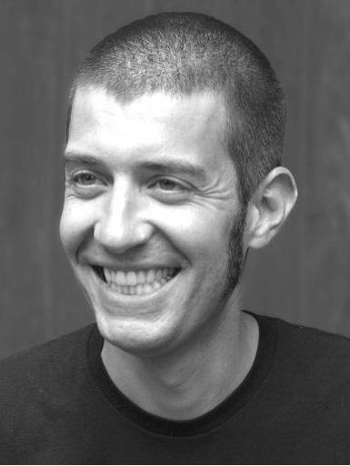
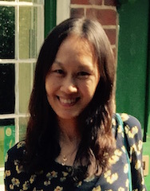
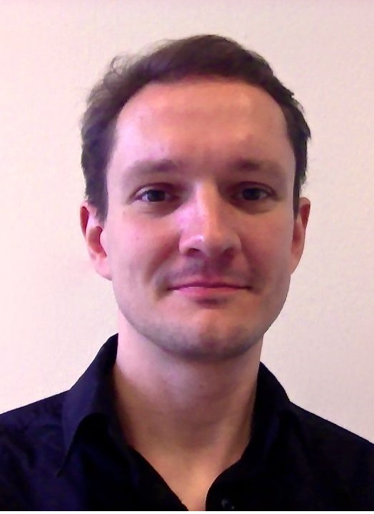

1st Workshop on Enabling Open Semantic Science (SemSci 2017)
In the past few years, a push for open reproducible research has led to a proliferation of community efforts for publishing raw research objects like datasets, software, methodologies, etc. These efforts underpin research outcomes much more explicitly accessible. However, the actual time and effort required to achieve this new form of scientific communication remains a key barrier to reproducibility. Furthermore, scientific experiments are becoming increasingly complex, and ensuring that research outcomes become understandable, interpretable, reusable and reproducible is still a challenge.
The goal of this workshop is to incentivise practical solutions and fundamental thinking to bridge the gap between existing scientific communication methods and the vision of an reproducible and accountable open science. Semantic Web technologies provide a promising means for achieving this goal, enabling more transparent and well-defined descriptions for all scientific objects required for this new form of science and communication. We are particularly interested in four kinds of contributions:
- Novel approaches that analyze scientific publications to understand how they link to their methods and research outputs
- Novel approaches that use the research outputs of a scientific publication to facilitate its understanding and reuse (like by generating explanations of results, interactive visualizations or properly linked datasets and methods)
- Novel approaches that help comparing and relating software, datasets and methods used in different publications
- Novel approaches to apply Semantic Web and Linked Data techniques to scientific workflows.
This workshop will be co-located with ISWC2017
Topics of Interest
Topics for submissions include, but are not limited to:
- Tools, methods and use cases for helping linking existing papers to their research products: data, software, methods and execution traces.
- New methods for helping linking scientific papers to other papers (e.g., papers that use similar approaches, similar methods, common software, common data, etc.)
- New methods for helping visualizing and presenting scientific information to scientists (e.g., provenance-based visualizations, summaries, presenting results at different levels of granularity, etc.)
- New approaches for retrieving the method steps expressed in a paper.
- New methods for generating automated explanations of scientific results.
- New approaches for comparing methods, protocols and methodologies expressed in papers.
- New methods to highlight the differences between execution runs of a scientific experiment (based on their configuration, performance, results, etc.)
- Tools and methods for discovering data and software used in similar publications or to address similar problems.
- Vocabularies and ontologies that help relate and describe software, data, methods and provenance used in a scientific publication.
- Vocabularies and ontologies that help capturing and presenting experiment information to scientists.
- Automatic annotation of scientific research
- Provenance, quality, privacy and trust of scientific information
- Novel visualizations of scientific data
- Novel approaches to apply Linked Data and Semantic Web techniques to scientific workflows
Submission Guidelines
SemSci2017 will combine paper and demo presentations with break-out sessions. Accepted papers will be published at CEUR workshop series. SemSci2017 explicitly welcomes alternative and enhanced submission formats such as communicative online materials. Authors who are preparing such a submission should contact the workshop organizers in advance to make sure we can accommodate for them in the submission and review process.
In addition to regular research papers, we will also invite short papers of up to 4 pages on tools and demos. Participants presenting such a paper will be expected to demonstrate the tool in the context of Semantic Science. We look both for innovative software solutions as well as tool that have proven useful in enabling Open Semantic Science. Papers will be reviewed based on potential impact of the tool for Open Semantic Science, usability, and documentation.
Workshop participants will be expected to contribute informally to discussions as well as bring up their own topics of interest. In addition, we expect to have break-out sessions to identify and discuss new topics and their related challenges.
To be announced: participants may send submissions in new formats.. Also, posters will be accepted.
To be announced: Link to the easychair
Important Dates
- Workshop papers due: July 21st, 2017
- Notification of accepted workshop papers: August 24th, 2017
- Publication of workshop proceedings: September 21st, 2017
- Workshops held: October 21st OR 22nd, 2017 (To be announced)
Program Chairs
 | Daniel Garijo is a postdoc researcher in the Information Sciences Institute of the University of Southern California. His research activities focus on e-Science and the Semantic web, specifically on how to increase the understandability of scientific workflows using provenance, metadata, intermediate results and Linked Data. |
|  | Tobias Kuhn is an Assistant Professor in the Web and Media group of the Computer Science department of the VU University Amsterdam. He got his PhD at the Institute of Computational Linguistics of the University of Zurich in 2010. After that, he was a lecturer and researcher at the University of Malta, postdoctoral associate at Yale University, and a postdoc at ETH Zurich, with stays as visiting researcher at the University of Chile and Stanford University in between. His research interests span diverse fields including knowledge representation, user interfaces, controlled natural languages, social systems, bioinformatics, and scholarly communication. His recent work has focused on the approach of nanopublications and how cryptographic methods and provenance modelling can support trust and reliability |
|  | Jun Zhao is a Senior Research Fellow at Oxford University. Her current research interests are data privacy, and information accountability for personal data. She has been on the organization committee of LISC since its first series in 2011 and she co-led the break-out session of LISC 2013 & 2014. She has been leading organizers and invited speakers of many national and international academic venues. She has been coordinating several national and international research and community projects. |
|  | Willem Robert van Hage is Senior eScience Research Engineer at the Netherlands eScience Center and guest researcher at the VU University Amsterdam. His main research topics in the past 15 years are semantics, augmented sense making, visual analytics, information integration, and text mining. He has developed the Simple Event Model (SEM), an OWL ontology for the description of event data; spatiotemporal indexing for SWI-Prolog (awarded with a best paper award at the EKAW 2010 conference), and the SPARQL package for the R statistical programming language. He is involved in various EU, Dutch, and US funded research projects on interactive analysis of large scale semantic network data. He has co-organized international research fora such as the Ontology Alignment Evaluation Initiative, the DeRiVE workshop series, the International Workshops on Linked Science, and various tutorials on Linked Science |
| Tommi Kauppinen is a project leader and docent at the Aalto University School of Science in Finland and a Privatdozent at the University of Muenster in Germany. He holds a habilitation (2014) in geoinformatics from the University of Muenster and a Ph.D. (2010) in media technology from the Aalto University. From April 2014 to September 2014 he was appointed as the Cognitive Systems Substitute Professor at the University of Bremen in Germany. A central theme in his work and teaching is data science and information visualization applied to spatio-temporal phenomena, and supporting understanding of related cognitive processes. He has co-organised international workshops on linked data, information visualization, spatial thinking and linked science. He serves also as a co-editor for the research topic Culturomics: Interdisciplinary Path Towards Quantitative Study of Human Culture of the Frontiers in Physics |
Program Committee
- Marieke van Erp, VU University Amsterdam
- Carsten Keßler, Aalborg University Copenhagen
- Yolanda Gil, University of Southern California, USA
- Oscar Corcho, Universidad Politécnica de Madrid, Spain
- Idafen Santana Pérez, Universidad Politécnica de Madrid, Spain
- Mark Wilkinson Universidad Politécnica de Madrid, Spain
- Craig A. Knoblock, University of Southern California, USA
- Gully Burns, University of Southern California, USA
- Khalid Belhajjame, University Paris-Dauphine
- Amrapali Zaveri, Maastricht University, Netherland
- Alasdair Gray, Heriot-Watt University, UK
- Paul Groth, Elsevier Labs, the Netherlands
- Anita de Waard, Elsevier Labs
- Jeff Pan, University of Aberdeen, UK